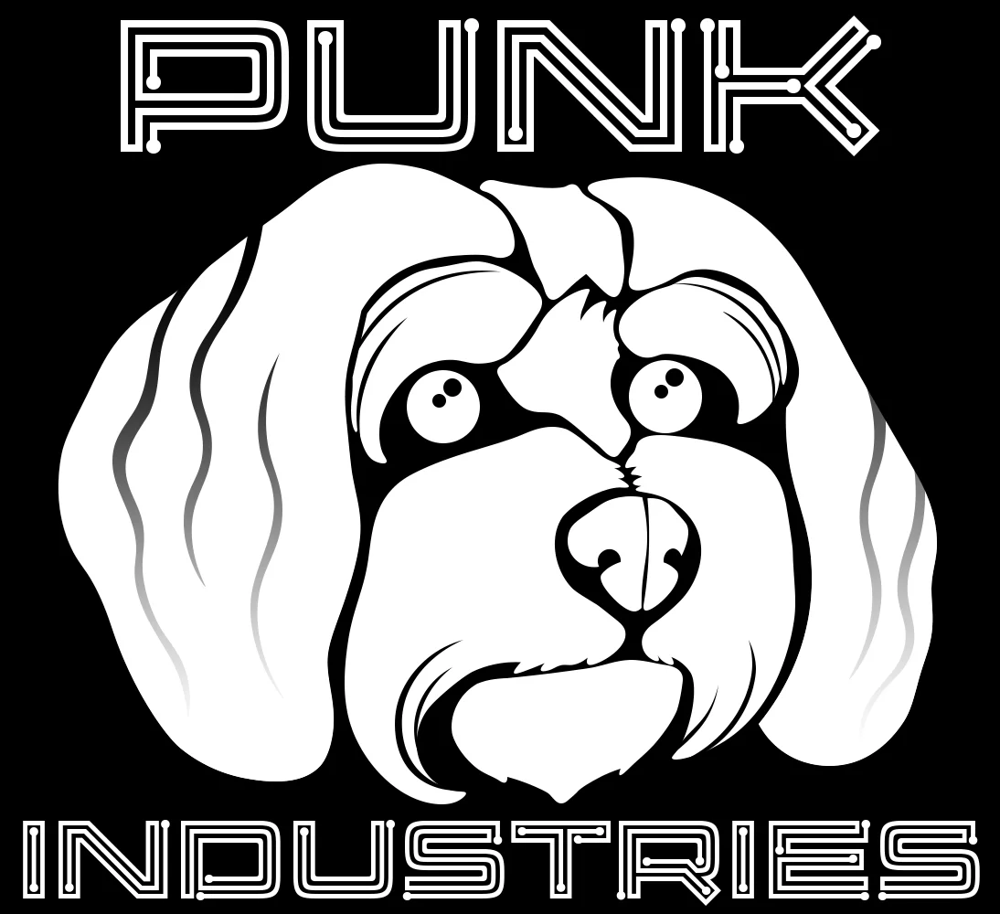
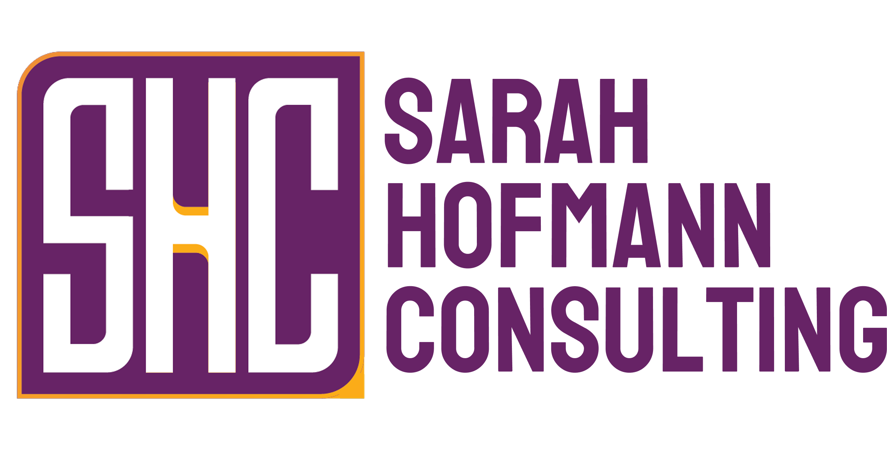

Projects That Ship.
Programs That Scale.
Delivery leadership for complex projects and programs with the technical depth to make the technology work. Clear plans, honest updates, and work that ships.
Let's Talk About Your ProjectWhy Work With Us
I spent over 15 years shipping projects across healthcare, advertising, financial services, and software. The pattern was the same: too many died in conference rooms. Smart teams. Solid ideas. Plans that looked great on paper but never made it to production.
That is why I built Punk Industries. We rescue stuck projects, stand up PMOs that actually run, and lead IT transformations where the technology works the way it is supposed to. Based in Florida, serving clients nationwide.
What We Do
Project & Program Management
We run projects so you don't have to. From kickoff to launch, we keep work moving with clear plans, honest updates, and real delivery.
- Project, Portfolio, & Program Management
- Project Recovery & Turnaround
- Project Planning & Roadmapping
- Resource Planning & Allocation
- Risk Management
- Vendor/Contractor Management
- Change Management
- Stakeholder Communication
Fractional IT Leadership
Fractional CIO, CISO, and TPM services for companies that need leadership-level IT direction without a full-time hire.
- Fractional CIO / CTO Advisory
- Fractional CISO & Security Leadership
- Fractional Technical Program Management
- IT Strategy & Roadmapping
- Security & Compliance Program Design
- Vendor & Technology Stack Evaluation
- Executive Technology Communication
- Board & Investor Readiness
IT Consulting
The technical backbone behind successful deliveries. We plan, deploy, and manage the systems your projects depend on.
- IT Project Delivery
- Cloud Solutions & Migration
- AI Implementation & Governance
- Data Migration & System Consolidation
- Infrastructure & Operations Planning
- Network Design & Management
- Security & Compliance
- Technical Strategy
How We Work
Every project is different, but our engagements follow a consistent arc. Whether we are there from day one or stepping into a stalled project, the goal is the same: ship work that holds up.
Who We Serve
We partner with organizations that need experienced delivery leadership without the overhead of a full-time hire.
Private Equity & Operating Partners
Portfolio companies and operating partners who need fast, senior delivery leadership to de-risk investments and accelerate value creation.
IT Leaders Facing Transition or Scale
CIOs, CISOs, and TPM leaders who need fractional coverage during growth, transformation, or leadership gaps without a full-time hire.
Stalled Project Teams
Groups mid-implementation who have lost momentum, missed milestones, or inherited a mess. We diagnose, reset, and lead the recovery.
Startups & High-Growth Teams
Fast-moving companies scaling teams, products, and operations. We bring structure without slowing you down.
Small to Mid-Size Companies
Teams running big initiatives but lacking dedicated project or program management. We step in, establish structure, and get work moving.
Consulting & Agency Partners
Firms that need embedded delivery support for their clients. We represent your brand, keep stakeholders aligned, and ship on your behalf.
Featured Client Results
Long-term partnerships and complex deliveries with named clients across healthcare and advertising.

SHC
Turned around an ERP deployment for a medical advertising client by aligning a fractured stakeholder group and restoring timeline control.
- Challenge:
- Conflicting priorities, resistant stakeholders, and a delivery date that was slipping out of reach
- Timeline:
- 3 months
- Outcome:
- Delivered the ERP system on schedule with full team adoption and buy-in
- How We Did It:
- Built trust through dedicated weekly meetings with resistant stakeholders, made all work publicly visible, and maintained constant communication via Zoom check-ins and email updates
Neurotone
Managed a nationwide rollout of 200+ patient-facing devices across audiologist offices, coordinating security, deployment, and training.
- Challenge:
- Complex multi-site rollout with internal resistance, competing security approaches, and patient-data compliance requirements
- Timeline:
- 5 months
- Outcome:
- Zero implementation issues, fully trained team, and complete rollout documentation
- How We Did It:
- Aligned stakeholders on requirements and budget, evaluated team capabilities, designed a simple deployment plan, and delivered with full documentation
Frankel
Run the ongoing IT program for a distributed advertising firm, keeping security, devices, and infrastructure stable as the company scales.
- Challenge:
- Distributed team with recurring device and security issues that kept pulling people away from client work
- Timeline:
- Ongoing partnership since 2022
- Outcome:
- Stronger security posture, improved stability, and support tickets cut in half
- How We Did It:
- Rebuilt network infrastructure, upgraded the device fleet, deployed MDM with automated security policies, created self-help tools, and set up proactive issue detection
Additional Project Experience
A broader set of anonymized engagements across SaaS, healthcare, financial services, and scientific publishing.
Program Management & PMO Build-Outs
Senior Care Services Company
Delivered a digital intake workflow and a Salesforce CRM migration for a senior care services organization.
- Challenge:
- Manual intake caused long wait times and lost revenue; legacy CRM was costly, unscalable, and inefficient across sales and operations
- Timeline:
- 14 months across both initiatives
- Outcome:
- $1M in net new revenue within three months of the workflow launch and $1M in CRM cost optimization through efficiencies and reduced maintenance
- How We Did It:
- Owned requirements, vendor selection, and change management for both initiatives; designed the intake-to-advisor workflow and managed the Salesforce migration, data sync, training, and adoption tracking
Healthtech Startup
Drove a new product line from concept through launch as part of a skunkworks team.
- Challenge:
- University spinout needed to diversify revenue beyond its core product, but had no dedicated delivery capacity for an exploratory initiative
- Timeline:
- 9 months
- Outcome:
- Product launched successfully with a projected $15M in annual revenue, and the skunkworks model became a repeatable path for new product lines
- How We Did It:
- Set up a lightweight delivery cadence for the exploratory team, coordinated across engineering, product, and clinical stakeholders, and drove the path from concept through MVP validation and launch while shielding the team from slower organizational processes
Private Equity-Backed SaaS Company
Built the program management function from scratch for a digital product organization.
- Challenge:
- No PMO, ad hoc project intake, and escalations happening in side conversations instead of governed forums
- Timeline:
- 6 months
- Outcome:
- Standing executive governance forum and a single source of truth across the portfolio for the first time
- How We Did It:
- Defined the operating model, governance cadence, and delivery standards; stood up a weekly executive forum with 2 SVPs and 4 VPs for in-session dependency resolution; and led the Asana to Jira/Confluence migration that gave leadership portfolio visibility
Healthcare Services Organization
Recovered a stalled database migration that was putting significant annual savings at risk.
- Challenge:
- Migration stalled due to unclear ownership, misaligned stakeholders, and no recovery plan; $400K in annual savings threatened
- Timeline:
- 4 months
- Outcome:
- Delivered on the revised schedule, unlocking $400K in annual cost savings
- How We Did It:
- Assessed stakeholders and root causes, developed a risk-based recovery plan with phased milestones, re-established governance with clear decision rights, and managed executive communication throughout the recovery
Financial Services SaaS Company
Modernized project management tooling and shipped an AI-powered intake system for a product organization.
- Challenge:
- Inconsistent tooling and ad hoc intake made prioritization difficult across multiple product teams
- Timeline:
- 5 months
- Outcome:
- AI intake adopted by every project manager within three days; standardized tooling across the organization
- How We Did It:
- Owned the business case and rollout of the Asana to Jira/Confluence migration, designed the AI intake system to convert raw requests into fully specified work items, and established the program management function from scratch
IT, Cloud & AI Transformations
AI Implementation Program
Led AI tool vendor selection, governance program design, and BI/AI platform rollouts for organizations adopting AI across operations and analytics.
- Challenge:
- Company wanted to move fast on AI adoption but had no governance, inconsistent tooling, and no repeatable process for evaluating or deploying AI solutions
- Timeline:
- 6 months
- Outcome:
- AI tools selected and deployed with governance guardrails, user adoption plans, and measurable business outcomes across multiple use cases
- How We Did It:
- Evaluated vendors against business needs and risk posture, designed a repeatable implementation and adoption program, built an AI governance framework, and rolled out BI/AI platforms with clear success metrics and executive reporting
E-Commerce Company
Migrated legacy cloud infrastructure to Kubernetes on AWS to reduce cost, improve reliability, and enable auto-scaling.
- Challenge:
- Rising cloud costs, inconsistent reliability, and manual scaling during seasonal traffic spikes created operational and customer-facing risk
- Timeline:
- 12 months
- Outcome:
- Reduced monthly cloud spend by 35% and enabled auto-scaling for peak traffic without manual intervention or downtime risk
- How We Did It:
- Designed a phased migration to containerized workloads with auto-scaling; coordinated engineering, operations, and vendor teams; and authored the cloud and operations roadmap that guided execution
Data Migration & System Consolidation Program
Led a multi-system consolidation and data migration effort that moved CRM, infrastructure, and operational data while preserving data integrity and avoiding downtime.
- Challenge:
- Disparate systems and legacy infrastructure created data silos, duplicate records, and a high risk of data loss or downtime during any move
- Timeline:
- 8 months
- Outcome:
- Multiple systems consolidated with clean, validated data and zero downtime during cutover
- How We Did It:
- Built a data mapping and validation plan, ran parallel environments and rehearsal cutovers, coordinated engineering and business teams, and managed go-live with real-time monitoring and rollback readiness
Let's Talk About Your Project
Ready to discuss your next project? Get in touch.